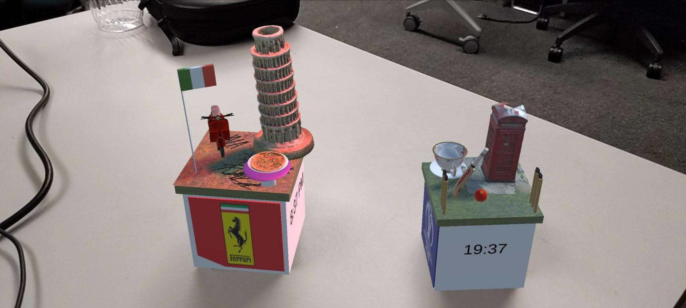
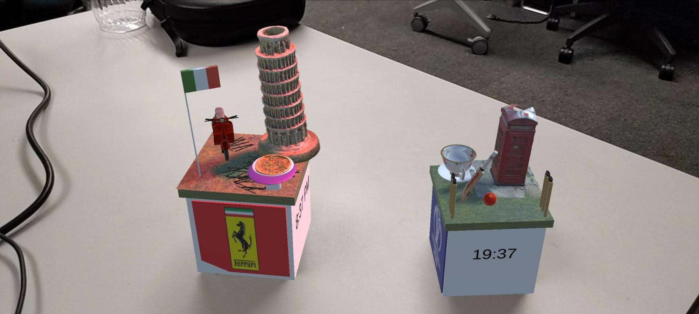

CS 428 Fall 2022
Project 1 : Implementing Augmented Reality on Physical Cubes
Pranav Rathod
Project 1
September 19, 2022
This project is to showcase two places/attractions that have been significant in my life and have been admired the most, to be displayed on physical cubes, through the magic of Augmented Reality (AR).
The two attractions that I have chosen are:
- The Leaning Tower of Pisa – Pisa, Italy
- Lords Cricket Stadium – London, United Kingdom
They Look something Like this:

This was achieved by using Unity and leveraging the Vuforia Package, which allowed me to implement this in Augmented Reality.
Project 1
September 19, 2022
This project is to showcase two places/attractions that have been significant in my life and have been admired the most, to be displayed on physical cubes, through the magic of Augmented Reality (AR).
The two attractions that I have chosen are:
- The Leaning Tower of Pisa – Pisa, Italy
- Lords Cricket Stadium – London, United Kingdom
They Look something Like this:

This was achieved by using Unity and leveraging the Vuforia Package, which allowed me to implement this in Augmented Reality.
Models Shown on the Two Cubes:
Italy is a country that is very special to me. It was the first country that me and my family visited when I was in Middle School. None of my family members had ever traveled outside our home country before and it was the first time we got to explore an unfamiliar place, to get to experience their culture, food and the people. It was interesting to see how my parents navigated a foreign country, because they were as new to being in a new place as I was with the same scarcity of intel. Before visiting we prepared by watching travel channels and learning how to ask directions to the nearest restaurant or a rest stop.
The Models Shown on the Merge Cube are a representation of the time I spent in Pisa, the things I got to see, eat, and the vehicle we got to ride.
I have displayed the leaning tower of Pisa, a Vespa (italian scooter), and the best creation that Italy has shared with the world, a PIZZA! These models are sourced from artists online and are cited below. I have also made two separate models using the Unity Game Engine which are the Table and the Italian Flag
The Sides of the Cube Showcase the Location (Pisa, Italy), The Current Time (in AM/PM) and Weather in *F that is fetched using http://worldtimeapi.org and https://openweathermap.org/ respectively as well as the Logo of the Ferrari Automobile Company.

If the flip the cube the directional light would change from red to blue, and change back to red when flipped again.
The Models displayed on the class cube are meant to represent London, England. Being from India, people that I grew up around took cricket very seriously, it is a sport that is dear to a lot of people I know and enjoys being watched and played throughout the country. India also hosts the world’s biggest Cricket Premier League known as IPL. Even though Cricket is the biggest sport in India, It was not invented there, It was introduced to the Indians during the British Colonization of the Indian subcontinent.
I got a chance to visit the Lords Cricket Stadium where India won the ICC World Cup in the year 1983, which made it a historic ground for the cricket lovers and was the first One-Day International World Cup that India won. The match, due to technical difficulties, was not televised in India, but people tuned in using the Radio and celebrated with pride after the results were announced live. The Model that is Displayed is supposed to represent a cricket pitch, and to associate that to the british region, I have also added a phone booth that is commonly seen around the streets of London and a fancy tea cup, another thing that the Indians and the Brits seem to have in common is their love for tea.
The models that were made by me are the Cricket stumps and the Season Ball (the season ball’s texture was made by me using procreate).
On Flipping the cube upside down it should shine a blue spot light on one of the stumps and turns off when flipped back.
Getting Started with Setting up the Environment
Unity:
To Download Unity3D go to https://unity.com/ → Get Started → Choose the Individual Tab → Personal → Get started. This should download Unity Hub for the Operating System you are using.
After Unity Hub has been installed, this becomes a central “hub” of all the various projects.
To add a Unity Version:
Click on Installs → Install Editor to add a new Unity Version.
The version I have worked on in this project is the version 2021.3.6f1, which you can find by clicking on the ‘Archive’ button (next to the ‘Long-Term Support’ Text) which will take you to a webpage. Look for the LTS Release 2021.3.6f1 → Unity Hub , This would let Unity Hub download and install the version.
You must install:
- Click on the little arrow and make sure that Android SDK & NDK Tools and OpenJDK are both selected.
Keep in mind that you will need Unity to be installed in your computer’s root/admin directory (or else Unity hub will download the files and fail on the installation). You can change the location by clicking the gear on the left pane of Unity Hub → Installs → Change the install location to your home directory.
Downloading and Opening the project in Unity:
Go to https://github.com/pranavsrathod/pratho2CS428Project1
- Click on the Green Code Button
- Click on Download Zip - this would download a compressed zip file of the project

- Create a new 3D project in Unity Hub using the Projects tab on the left and then a new project of type 3D core.
Adding The Vuforia Package :
You will need to make a free developer account on the Vuforia web page - https://developer.vuforia.com/
Select Vuforia 10.9 from https://developer.vuforia.com/downloads/sdk Then click on 'Add Vuforia Engine to a Unity Project or upgrade to the latest version'. Vuforia should download as add-vuforia-package-10-9-3.unitypackage.
To add the Vuforia Engine to your Unity project :
On the Menu bar :
Making The Physical Cubes:
After all those exhausting steps, Let us Do some arts and crafts:
We need to make Physical Cubes, Let Us Name them the Merge Cube and the Class Cube.
Here is the link to the zip file for You to download, print, cut and build the two cubes.
I Suggest cutting accurately and using school glue instead of tape because you need the cube to be visible to the camera and not reflect anything to be tracked properly.

Left - Merge Cube
Right - Class Cube
Running The Application on an Android Phone
In Unity go to Edit / Project Settings / Player / Other Settings and select Minimum API Level to Android 8.0 Kitkat (API level 26)

Connect your android phone to the computer with the appropriate cable. On the phone go to Settings, select Developer options, and then enable USB debugging. If you don't see developer options, go to Settings > About Phone > Build Number and tap the "Build Number" option 7 times to enable developer options. Once developer options are enabled, turn on USB debugging.
On the Unity project’s menu bar Go to Window → Vuforia Configuration. On the inspector window, scroll down to Device Tracker settings and make sure that the ‘Include ARCore Library’ is Unchecked

In Unity go to File / Build Settings and hit Refresh' next to Run Device. You should now see the connected mobile phone in the dropdown menu. Select the phone and hit Build and Run. If you are prompted to save the apk, save it on your computer. The project will build and run automatically on your phone.
Why Do I think AR become popular in the future?
AR is something most of the generation that grew up with social media such as Instagram and Snapchat are familiar with. Ever since Snapchat introduced filters that allowed people to add dog ears and nose Augmented Reality in social media has blown up, they don’t just give a person a funny animation but also have become way for people to achieve they want to be seen and look like. But outside face filters, we have also come across a something that became a phenomenon in the year 2016, which is still prevalent to this date. Pokémon Go, an application that incorporated real and artificial worlds together was a huge leap in giving people a peak through the window the possibilities in augmented reality.
Augmented reality has not just become a way to pass people’s time by allowing them to go around the city and catch imaginary creatures, but it has been incorporated in various ways that have turned out to be useful. A few years ago, apple introduced a LiDAR sensor that allowed users to accurately map out environments. This not only allowed us to measure dimensions of the room but also enhanced features of augmented reality where we can place virtual objects in a physical space, say a table when being purchased online, to see how it fits in the given space.
Recently, when Meta was announced, its whole concept revolved around expanding the virtual world, make it more interactive where creativity and imagination were given its own dimension and space to exist in. We were shown a possible concept that people could scan a QR Code next to any art, say a mural and with the magic of augmented reality It would turn into a 3-Dimentional animated experience, and in order to get and extended experience the customer would have to tip the artist. This is just one of the possibilities that was introduced with respect to augmented reality, imagine the ways that it could be stretched and molded.
Even though the world is torn about the expansion of the virtual world I think it would be worrying when it will be misused or used so extensively that a person forgets the line between the real and the virtual world. But in my opinion AR can be used respectfully and to enhance human experiences.
Citations
"Leaning tower of Pisa" (https://skfb.ly/6ZCFH) by Aglaiapoulida is licensed under Creative Commons Attribution (http://creativecommons.org/licenses/by/4.0/).
"Pizza" (https://skfb.ly/6RqYo) by Rigsters is licensed under Creative Commons Attribution (http://creativecommons.org/licenses/by/4.0/).
"Vespa 150 highpoly" (https://skfb.ly/6RDyz) by Alex_Z is licensed under Creative Commons Attribution (http://creativecommons.org/licenses/by/4.0/).
"London phone booth" (https://skfb.ly/DvXU) by alban is licensed under Creative Commons Attribution (http://creativecommons.org/licenses/by/4.0/).
"England Tea Cup" (https://skfb.ly/6WZNH) by chung_the_artist is licensed under Creative Commons Attribution (http://creativecommons.org/licenses/by/4.0/).
"MRF Cricket Bat (Sports)." (https://skfb.ly/6S76A) by Rohit Pawar is licensed under Creative Commons Attribution (http://creativecommons.org/licenses/by/4.0/).
"Audio https://www.youtube.com/shorts/o0I8Iu2yCfU"